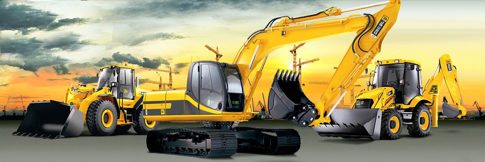

История предприятия
Фирма была создана на базе АОЗТ «Кесовогордорстрой», входившую в состав треста Агромпромдорстрой, и имеющую 35-летний опыт работы в дорожном строительстве. Изначально дорожно-строительная компания осуществляла строительство межколхозных и межрайонных автомобильных дорог в Кесовогорском районе Тверской области. Ежегодно в строй вводилось от 10 до 25 км автомобильных дорог с асфальтобетонным покрытием. Для производства асфальтобетонной смеси был приобретен один из первых асфальтобетонных заводов в Тверской области, работающих на природном газе. Начиная с 2003 года организация перешла на выполнение строительно-монтажных работ вахтовым методом, и первым объектом, где были выполнены большие объемы, является спрямление Веребьинского участка Октябрьской ж.д. в Новгородской области. В дальнейшем организация принимала участие в строительстве таких значимых объектов, как строительство ж.д. вокзала Ладожский в г.Санкт-Петербурге, реконструкции Санкт-Петербургского железнодорожного узла Октябрьской ж.д., реконструкции ст.Ижоры, строительстве первой очереди транспортного обхода г.Санкт-Петербурга на участках Шафировской, Ржевской и Рябовской развязок. На вышеперечисленных объектах выполнялись работы по возведению земляных насыпей, устройству дорожной одежды, сооружению подходов к мостам и путепроводам, благоустройство территорий и многие другие работы. На подряде у фирмы ОАО «Ямалгазинвест» было осуществлено строительство большого участка вдольтрассовой автодороги на участке «МГ СРТО-Торжок км.2440 – км.2516,5 участка УТ3» в Тверской и Ярославской областях протяженностью 32 км. На этом участке ОО «ДСК» были построены мостовые переходы через реки Корожечна и Соломинка. Также были построены два участка вдольтрассовой автодороги: «МГ СРТО-Торжок км. 2191,7 – км.2224,8» протяженностью 15 км в Вологодской области и «МГ СРТО-Торжок км. 2516,5 – км.2595,9 протяженностью 23 км в Тверской области. С 2003 года ООО «ДСК» выполняет строительно-монтажные работы на объекте «Комплекс защитных сооружений г.Санкт-Петербурга от наводнений», который является одним из сложнейших гидротехнических сооружений в России. Проект "Комплекс защитных сооружений Петербурга" состоит из двух частей: первая часть - это собственно защитные сооружения от наводнений; вторая часть - подходные каналы, судопропускные сооружения. Главный проектировщик - институт "Ленгидропроект". Функции генподрядчика были возложены на ЗАО "ЛенСМУ". Проект включает в себя 11 защитных дамб, шесть водопропускных и два судопропускных сооружений КЗС. ООО «ДСК» первоначально выполняло работы в качестве субподрядной организации. С 2008 года ООО «ДСК» приняло на себя функции Генподрядчика на объектах: «Завершение строительства северных дамб Д-4 – Д-11 КЗС Санкт-Петербурга от наводнений (с инженерными сетями), включая работы не вошедшие в контракт А-8» и «Завершение строительства южного участка кольцевой автодороги Бронка-Котлин с транспортной развязкой в районе ст.Бронка». По контрактам на данных объектах ООО «ДСК» приняло на себя функции Генподрядчика. Также организация стала победителем в открытом аукционе на право заключения Государственного контракта на строительство объекта «Создание единопрочной конструкции дорожного полотна переустраиваемого северного участка САД с территорией С2 по адресу: Санкт-Петербург, Комплекс защитных сооружений Санкт-Петербурга от наводнений». На родной Тверской земле ООО «ДСК» тоже по мере возможности осуществляет выполнение строительно-монтажных работ. Так в 2007 году ООО «ДСК» было построено водохранилище с земляной плотиной на р.Кашинка для водоснабжения п.Кесова Гора Тверской области. Работы выполнялись на подряде у ГУП «Тверьоблстройзаказчик». В 2008 – 2009 гг. были построены еще два объекта на Генподряде у ГУП «Тверьоблстройзаказчик», это – «Реконструкция футбольного поля в п.Кесова Гора» и «Районный дом культуры в г.Кашине Тверской области». Построена первая очередь 5-этажного жилого дома в г.Кашине Тверской области на подряде у ОАО «Корпорация жилищного строительства». Но в основном все-таки организация работает на объектах в других регионах Российской Федерации. В 2009 году заключен договор субподряда на выполнение работ на объекте «Реконструкция автомобильной дороги М-4 «Дон» - от Москвы через Воронеж, Ростов на Дону, Краснодар до Новороссийска на участке км 599 – км 633 в Воронежской области. В 2010 году ООО «ДСК были заключены договора на выполнение строительно-монтажных работ на следующих объектах: Совмещенный комплекс для проведения соревновании по лыжным гонкам и биатлону, вместимостью 16 тыс. зрителей - подъездная автомобильная дорога по склонам хребта Псехако, относящийся к Олимпийским объектам. КЗС г.СПб от наводнений. Работы по восстановлению проектного профиля дамб Д1,Д2,Д4,Д6,Д7,Д8,Д9,Д10. Комплекс работ по завершению: строительства локальных очистных сооружений комплекса защитных сооружений Санкт-Петербурга от наводнений, оборудования специальными техническими средствами участка автодороги Бронка-Горская, строительства пожарного депо (далее – Объект), по адресу: г. Санкт-Петербург, Комплекс защитных сооружений Санкт-Петербурга от наводнений. Продолжаются работы на объектах РЖД. Кроме вышеперечисленного в 2008 году было освоено новое направление деятельности – построен и введен в эксплуатацию деревообрабатывающий цех, где установлено современное высокотехнологическое оборудование. Цех выпускает широкий спектр обрезного и необрезного пиломатериала: вагонка, половая доска, пагонажные изделии, клееный брус и т.д. Для обеспечения работников предприятия необходимой спецодеждой, организация организовала швейных цех, который до последнего времени осуществлял выпуск летней и зимней спецодежды. Однако, с связи с увеличившемся количеством работающего персонала предприятия, мощности швейного цеха становится недостаточно. Поэтому в 2011 году запущен проект строительства нового швейного цеха с увеличенной мощностью производства швейной продукции, как спецодежды, так, в перспективе, и иной продукции, направленной на потребительский спрос.Новый швейный цех находится на завершающей стадии строительства. Производится внутренняя отделка построенного здания, прокладка коммуникаций, оформление разрешительной документации, подбор швейного оборудования. Для работы нового швейного цеха планируется создать порядка 60 рабочих мест. В 2008 году для работников организации собственными силами было построено два жилых двухквартирных дома, где получили квартиры молодые специалисты ООО «ДСК». В дальнейшем планируется строительство доступного жилья для населения п.Кесова Гора. За последние годы в ООО «Дорожная Строительная Компания» произошло значительное увеличение и обновление парка строительной техники, в основном это техника фирм VOLVO, IVECO, HITACHI, KОMATSU, CATERPILLAR, DONGFENG, КамАЗ и др. На сегодня количество парка спецтехники для производства строительно-монтажных работ составило более 500 ед. Для обеспечения своих потребностей при строительстве, а также потребностей иных строительных организаций в асфальто-бетонных смесях на олимпийском объекте Краснодарского края летом 2011 был приобретен и в настоящий момент проходит отладочные испытания передвижной асфальто-бетонный завод. ООО «ДСК» для выполнения строительно-монтажных работ имеет в своем распоряжении производственную базу, а также передвижной жилой городок на базе комплектов модульных зданий на 800 человек. Организация выполняет работы по вахтовому методу в двухсменном круглосуточном режиме. В настоящий момент организация приступила к активной автоматизации процессов строительства и работ по его обеспечению путем внедрения программного комплекса 1С 8 «Строительство». С помощью данного программного продукта организация рассчитывает получить эффективное взаимодействие всех служб предприятия с четкой управленческой связью, конкретизацией сроков исполнения задач, планированием, контролем и отчетностью на всех этапах выполнения строительно-монтажных работ. Численный состав фирмы на 18 октября 2011 года 2280 человек, в т.ч. 649 человек - жители пгт. Кесова Гора и Кесовогорского района, 949 человек – жители остальных районов Тверской области и 682 человека – жители других субъектов Российской Федерации.